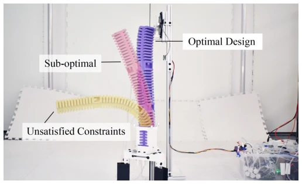
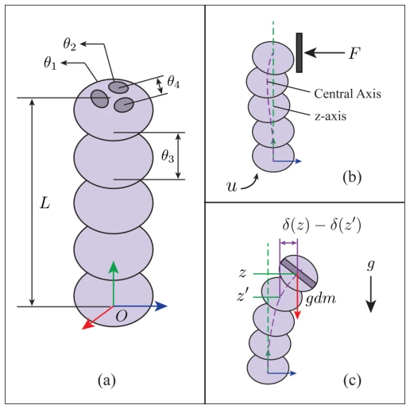
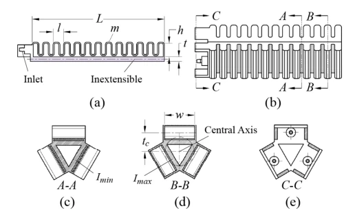
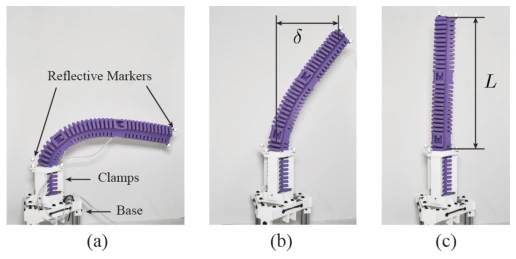
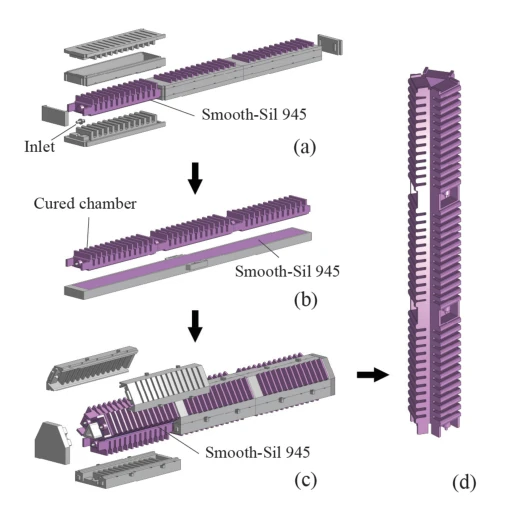
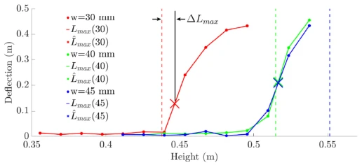
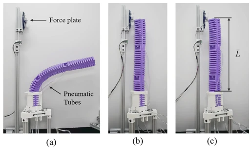

This paper attempts to answer the ultimate question in the field of soft robotics: how large can soft robots be built while still possessing strength? Instead of choosing expensive simulation iterations, the authors devised a set of "closed-form solution" mathematical magic, directly calculating the geometric dimensions that do not bend under gravity and maximize thrust. The highlight lies in simplifying the complex non-linear optimization problem into a monotonic function problem on the boundary of a convex set, where the logic is quite elegant, directly providing an analytical solution, saving countless Finite Element Analysis (FEA) iterations. But the drawbacks are also obvious: this method highly relies on "blocking force" as a proxy metric, and assumes a monotonic relationship between force and geometry, which may be too idealized in real complex interaction scenarios. Furthermore, experiments were only conducted on a single PneuNet architecture, and error analysis shows that manufacturing defects (such as uneven wall thickness) significantly affect results, implying the theoretical model's stringent requirements for process precision. Overall, this is a beautiful theoretical derivation, but the robustness during engineering implementation still needs to be questioned.
Current soft robotics research has a huge gap between "large size" and "high force output". Existing work mostly stays at the concept validation stage, either using soft materials only at the end-effector, or relying on rigid material mixing, or only applicable to scenarios where self-weight support is not needed [12]-[16]. For large manipulators made entirely of soft materials, there is currently a lack of a systematic design framework to judge whether they are suitable for specific tasks. Existing geometric optimization methods mostly rely on Finite Element Analysis (FEA) for iterative search, targeting specific tasks or robot structures, lacking universality [23]-[26]; or based on rod models optimizing motion rather than force [27]-[28]. More critically, no prior work has been able to perform analytical optimization for soft arms under gravity loads without considering iteration [30]-[31]. This paper aims to fill this gap, providing a method that requires no trial-and-error to directly determine the geometric dimensions of large soft arms, enabling them to maximize blocking force while supporting self-weight, thereby answering the question of "whether soft robots can be both large and strong at human scale".

Fig. 1. We propose an optimization framework for the geometry of a soft limb that maximizes the blocking force subject to a fixed amount of material and anti-buckling conditions. Hardware tests validate the anti-buckling constraint (yellow) as well as optimality for blocking force (pink vs. purple).
The overall framework models soft arm design as a constrained optimization problem: maximizing blocking force under fixed material volume and minimum length constraints, while satisfying anti-buckling conditions. The core innovation lies in converting the non-convex, non-linear optimization problem into an analytically solvable form through mathematical derivation. First, utilizing Euler-Bernoulli beam theory and Greenhill solution, an analytical relationship between maximum stable height L_max and geometric parameters (moment of inertia I, area A) was established [32]. For non-uniform cross-sections, a heuristic approximation assumption was proposed, using minimum moment of inertia and average linear density to estimate L_max, thereby transforming the complex variable cross-section problem into a uniform beam problem. Second, it was proven that under specific assumptions (feasible region convex set, objective function monotonic), the optimal solution must lie on the constraint boundary (Active Constraint Theorem). This means no global search is needed, only calculating boundary intersections is sufficient to obtain optimal geometric parameters. Finally, substituting the PneuNet blocking force model, a monotonic function regarding a single variable (such as chamber width) was derived, and directly solving the boundary value yields the optimal design. This method completely avoids iterative optimization, achieving "one calculation, direct design".

Fig. 2. Problem setup of an arbitrary soft robotic limb with complex geometrical shape. a) Arbitrary geometrical design parameters of the soft limb. b) Actuated limb interacting with external blocking force. c) Limb’s distributed weight under gravity.

Fig. 3. Design parameters of the prototype PneuNet soft manipulator. (a) 1D PneuNet. (b) Prototype limb made of three PneuNets, with the bottom side oriented on the left. (c) Cross-section at Imin in hatched area. (d) Cross- section at Imax in hatched area. (e) Cross-section at the connection in hatched area.
The experimental part constructed three PneuNet soft arm prototypes with different chamber widths (w=0.030m, 0.040m, 0.045m). Among them, w=0.045m is the theoretical optimal solution, w=0.040m is the suboptimal solution, and w=0.030m violates the anti-buckling constraint. Evaluation metrics include: 1) Maximum stable height (L_max), measuring end-effector deflection at different lengths via motion capture system, defining the point of maximum curvature as the experimental buckling length; 2) Blocking force, measuring maximum thrust at different air pressures under fixed length. Results show that the error between theoretically predicted L_max and experimental values is controlled within 3.5cm (about 6%), verifying the effectiveness of the approximate formula. In force output tests, the optimal design w45, after exceeding critical pressure, has blocking force significantly higher than the other two groups, and w30 cannot produce effective thrust due to buckling. Ablation analysis indicates that manufacturing defects (such as uneven wall thickness) are the main cause of deviation between theoretical and experimental values, confirming the model's sensitivity to process precision.

Fig. 5. Buckling test setup: a) Limb buckled at maximum length, b) Limb deflected by δ due to self-buckling with lower-length, c) Limb unbuckled at length L.

Fig. 4. Manufacturing steps. (a) Mold casting chambers. (b) Overmolding seal for PneuNet. (c) Overmolding connection for multiple PneuNets to become one manipulator limb. (d) Final limb after removing supports.

Fig. 7. Empirical δ at varying L of each limb where the cross shows empirical ˆLmax and the dashed lines represent Lmax calculated from equation (6). ∆Lmax is visualized for w30 as an example.

Fig. 6. Blocking force test setup of limb, with (a) w30, (b) w40, (c) w45.